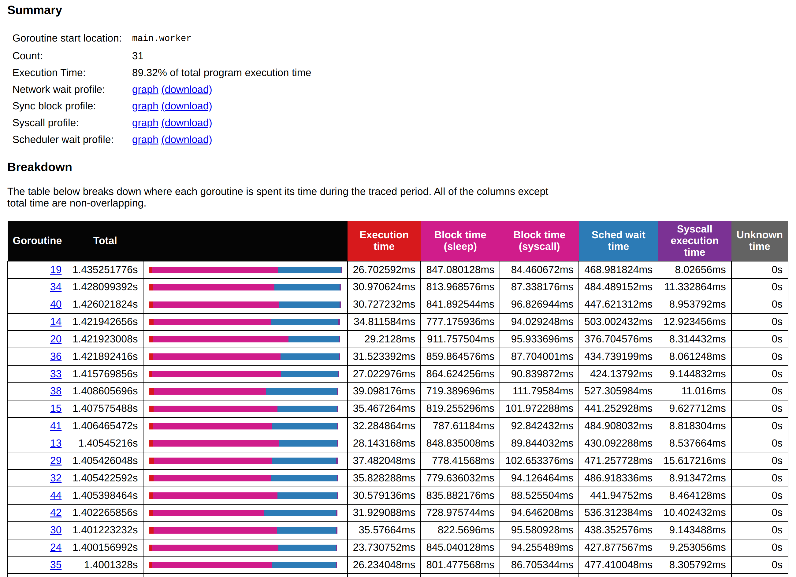
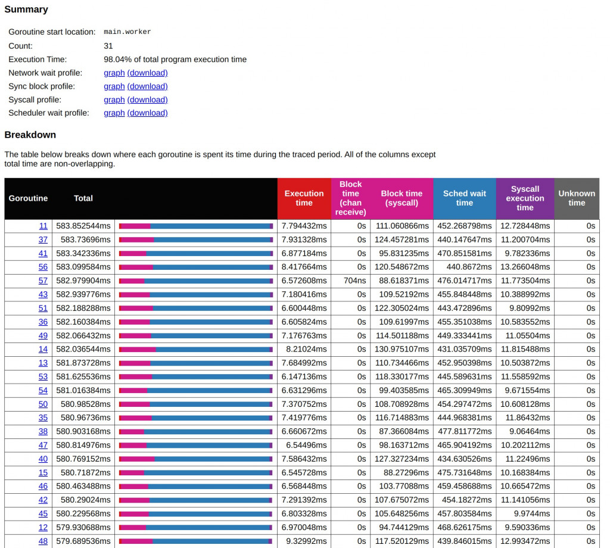
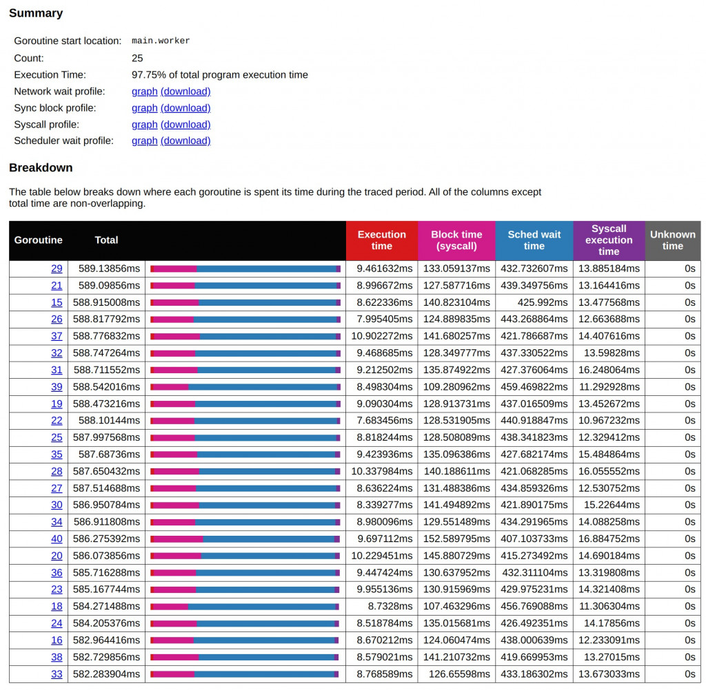

D18 Go Tool Trace - 4 從 分析到實戰：最佳化 Goroutine 數量
- 系列：應該是 Profilling 吧？系列 第 18 篇
- Day：18
- 發佈時間：2024-09-18 00:00:36
- 原文：https://ithelp.ithome.com.tw/articles/10352141
在昨天的文章中，我們深入探討了如何利用 Go Tool Trace 來分析程式的性能瓶頸，特別是 Goroutine 的調度與資源競爭問題。我們發現過多的 Goroutines 會導致 CPU 調度過度，從而增加排程等待時間，進一步降低系統的效率。通過數據分析與 Object Pool 技術的引入，我們逐步優化了系統性能，使得 Goroutines 的執行時間大幅縮短，同時降低了 GC 和系統調用的負擔。
今天，我們將繼續這個主題，進一步探討如何找到適合的 Goroutines 數量，並運用公式來計算出最佳化後的並發度。通過對不同 Goroutines 數量的實際測試與數據分析，我們將展現如何在高併發環境下，最大化資源使用效率，並保持系統性能的穩定性。
在高併發的環境中，找到適合的 worker 數量是一個關鍵的優化步驟。在上圖中，我們可以很容易地從總體比例圖中看到 Sched wait time（排程等待時間）和 Block time（系統調用阻塞時間）的差異。儘管系統需要進行寫入 I/O 並調用系統層面的 syscall，然而，在整個圖表中，幾乎看不到執行時間的明顯比例，這意味著大部分時間並非花在執行具體的任務上，而是浪費在等待 CPU 調度上。也就是說，儘管 CPU 佔用時間達到了 98.59%，但實際上，CPU 大部分時間都被浪費在無效的排程過程中，這顯示出 Goroutine 數量過多（1000 個）導致了過度的 CPU 調度壓力。

從上面這個現象我們可以得知，當前的 1000 個 worker 數量顯然太多了。我們需要找到一個更合適的 worker 數量，以降低過度的調度開銷，提升實際執行的效率。然而，直接嘗試不同的 worker 數量進行調整並不現實，因此可以通過計算公式來幫助我們快速找到一個最佳的數量。
Sched wait time我們已經知道是 Goroutines 在等待 CPU 調度將 CPU 指派給自己能執行時所花費的時間。雖然 CPU 佔用時間有 98.59%，但可以說幾乎在瞎忙。我們從這裡就能知道 Goroutine 1000 的數量太高了，至於要降低成多少呢？總不能每次都二分法吧（500、250、125這樣嘗試下去） 。
目前，1000 個 worker 執行完成任務所需時間約為 1.46s。這是一個重要的基準。調整完的結果不能比這個基準還差。
go run main.go -workers 1000
Workers: 1000, Elapsed Time: 1.468617815s
調整 Goroutine 數量的計算
為了找到最佳的 Goroutine 數量，可以使用以下的公式進行計算：
假設 Total Time 是整個 goroutine 的執行總時間，主要由以下幾部分構成：
T_wait: sched wait time（排程等待時間）T_exec: execution time（執行時間）T_block: block time（包括 sleep 和 syscall block time）T_syscall: syscall execution time（系統調用執行時間）
Goroutine 數量 = ( T_wait + T_exec + T_block + T_syscall ) / T_wait
這個公式的目的是保持 T_wait（排程等待時間） 和 T_exec、T_block、T_syscall之間的比例平衡。如果 T_wait太高，則意味著 Goroutine 數量過多導致了過度的排程開銷。我們希望減少 Goroutine 數量，直到這些時間達到一個合理的比例。
與 D11 高併發系統設計中的實踐與挑戰 的
最佳 Thread 數量 = （（Thread 等待時間 + Thread CPU 時間）/ Thread CPU 時間）* CPU 數量
今天的公式更側重於調度、系統調用的影響，強調調度效率以及阻塞時間對於 CPU 資源的影響。目的是讓 CPU 更加高效地被利用，減少等待時間。
可以按照上面的數據嘗試計算一下，以 Goroutine 885 為例。(1.4s + 258us + 43ms+3ms + 300us) / (258us + 43ms+3ms + 300us) = 31。
改以 worker 31 個執行，能看到總時間一樣的。這說明我們其實不用這麼多的 Goroutine 也能以一樣的效率完成作業。
go run main.go -workers 31
Workers: 31, Elapsed Time: 1.435286063s
透過上述公式的計算，我們得出當 worker 數量減少到 31 個時，總體執行時間依然保持在 1.4 秒左右，與 1000 個 worker 時的總時間相當。然而，這時的 Sched wait time 顯著減少，這意味著 CPU 調度壓力已經得到了緩解，每個 worker 能夠更有效地使用 CPU 資源來完成工作。相比之下，1000 個 worker 的 Sched wait time 平均為 1.4 秒，而 31 個 worker 的 Sched wait time 則下降到約 400 毫秒，顯示出減少 Goroutine 數量的確有效地減輕了排程等待的負擔。

調整過程中，要減少變數的數量。我們首先追求的是同樣的總執行時間下，怎麼有效增加 CPU 的執行時間。
而不會同時要追求總執行時間下降，又想要有效增加 CPU 的執行時間。
比較與分析
在減少 worker 數量之後，系統調用阻塞時間和執行時間也發生了變化。首先，系統調用的阻塞時間並未隨著 Goroutine 數量的變化而大幅改變，這是因為 I/O 操作的本質決定了阻塞時間相對穩定。而執行時間則有所增加，這意味著隨著 worker 數量的減少，CPU 能夠將更多的時間分配給每個具體的任務，而不是花在排程上，這也進一步印證了減少 Goroutine 數量對於提升 CPU 使用效率的有效性。
在這樣的基礎上，嘗試進一步增加 Goroutine 數量至 53 時，總體執行時間略微縮短到 1.2 秒，但 sched wait time 也有所上升。這表明，增加 Goroutine 數量會再次增加排程壓力，並未顯著改善吞吐量。由此可見，單純增加 Goroutine 數量並不是提升效能的最佳途徑，特別是在遇到系統調度瓶頸的情況下。
組合昨天的 Object Pool
go run main.go -workers 31
Workers: 31, Elapsed Time: 582.977589ms
此時，能驚訝的發現，整個時間大幅縮短至 583 ms。

在將這裡的數據套用一次公式計算看看。
選擇一個 Goroutine（例如 Goroutine 11）來計算：
- Sched wait time (T_wait) = 452.268789ms
- Execution time (T_exec) = 7.794432ms
- Block time (T_block) = 0ms (chan receive) + 111.060866ms (syscall)
- Syscall execution time (T_syscall) = 12.728448ms
(452.268789ms+7.794432ms+111.060866ms+12.728448ms)/452.268789ms
=(583.852535ms)/452.268789ms ≈ 1.29
這意味著根據這個 Goroutine 的情況，我們目前的 Goroutine 數量可能已經接近最佳水平，減少 Goroutines 數量不會帶來太多額外的效率提升。在這個情況下，進一步優化可能是調整其他系統層面的資源配置或工作負載。
但還是能將現在的 worker 數量 /1.29 ≈ 25試試看。
go run main.go -workers 25
Workers: 25, Elapsed Time: 589.183927ms

微調後的分析
從 31 個和 25 個 Goroutines 的執行結果對比來看，我們可以觀察到一些關鍵的差異。首先，在 31 個 Goroutines 的情境下，執行時間約為 583 毫秒，並且 CPU Sched Wait Time 大多數集中在 430 到 470 毫秒之間。這表示 Goroutines 雖然啟動了足夠多的執行緒來處理工作，但仍有大量時間浪費在等待 CPU 排程上，尤其是當系統遇到大量系統調用時。
而在 25 個 Goroutines 的狀況下，總體執行時間略有延長，來到了 587 毫秒左右，但 CPU 調度的等待時間也有所減少，排程等待時間主要集中在 420 到 450 毫秒之間。這表明，減少 Goroutines 數量使得 CPU 在排程和資源分配上更加有效率，避免了過度的 Goroutines 爭奪資源導致的頻繁上下文切換。
此外，兩者在 Block Time 上也有所差異。31 個 Goroutines 時，Block Time 在不同的 Goroutine 之間有較大的變化，從 95 毫秒到 130 毫秒不等。相對而言，25 個 Goroutines 的 Block Time 更加集中，大多數 Goroutines 的 Block Time 保持在 120 到 140 毫秒之間，顯示出系統調用更為穩定和一致。
對比下來，減少 Goroutines 數量有助於縮短調度等待時間，並使系統調用的阻塞時間更加集中和穩定。這表明，隨著 Goroutines 數量的減少，系統資源可以更有效地分配，從而提升系統整體性能。與此同時，總執行時間雖然略有延長，但這並未對系統效率產生太大負面影響，反而能夠在高效調度資源的情況下，達到更穩定的性能表現。
總結來說，31 個 Goroutines 提供了更高的並發處理能力，但代價是增加了排隊和調度的時間；而 25 個 Goroutines 則有效降低了調度開銷，使系統調用更加穩定，整體運行更加高效。因此，在實際應用中，應根據系統的具體負載來選擇合適的 Goroutines 數量，以便在並發處理能力和系統資源使用效率之間取得平衡。
小結
今天的實驗進一步驗證了昨日分析的結論：過多的 Goroutines 不一定帶來更好的性能，反而會加重 CPU 的調度壓力。通過對不同 Goroutines 數量的測試，我們發現 31 個 Goroutines 已經達到了一個較佳的平衡點，既能保持高併發處理能力，又不會浪費系統資源。在這個數量下，系統的 Sched Wait Time 明顯降低，I/O 操作的阻塞時間保持穩定，整體運行效率得到了顯著提升。
當我們嘗試進一步減少 Goroutines 數量至 25 個時，雖然排程等待時間有所下降，但總體執行時間略有增加，這表明減少 Goroutines 數量的邊際效益已經減少。因此，我們可以得出結論，在處理高併發任務時，選擇合適的 Goroutines 數量對於提升系統效能至關重要。而最佳的 Goroutines 數量並不是越多越好，而是應該根據系統負載進行調整，以達到最佳的資源利用效率。
透過這次實驗與公式應用，我們能夠更科學地計算出合理的 Goroutines 數量，從而在未來的高併發場景中，為系統性能優化提供更明確的方向。
CPU 使用率很高，真的不代表是有效的被利用在執行程式。需要我們花些時間與大量的知識來調整分析。
但重要的是要有穩定的 Baseline 作為比較的基準點。
CPU 使用率很低很低，那老闆才要哭泣。浪費錢租機器跟服務，每個月一樣要付那些費用的。就能考慮降機器規格節省成本。